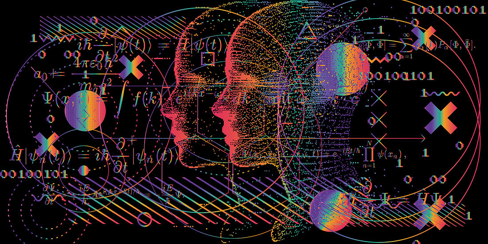

¿Qué es la inteligencia artificial?
La Inteligencia Artificial es una rama de la informática que se enfoca en desarrollar sistemas capaces de realizar tareas que requieren inteligencia humana. Esto incluye el aprendizaje automático, el procesamiento de lenguaje natural, la visión por computadora y más.
IA se utiliza en una amplia variedad de aplicaciones, desde asistentes virtuales como Siri y Alexa hasta vehículos autónomos y diagnósticos médicos avanzados.
